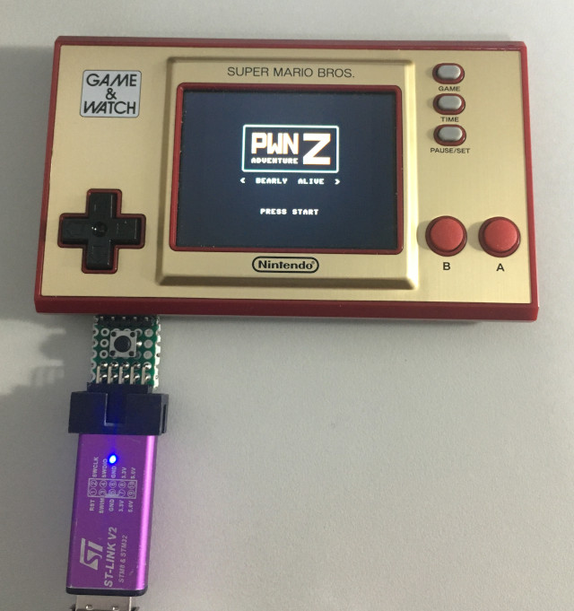
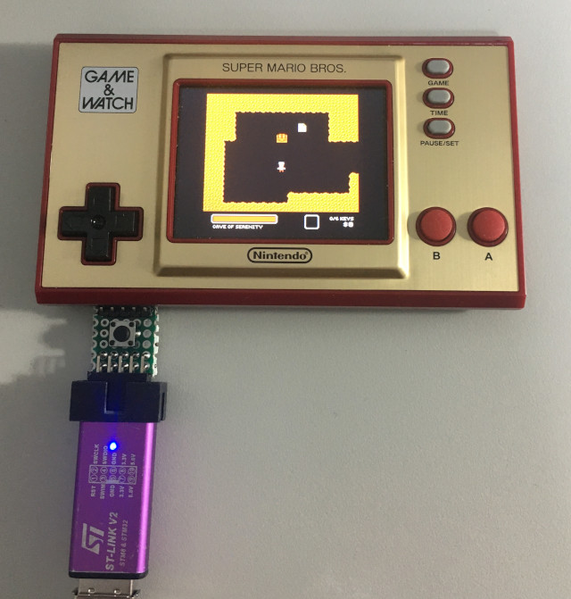

參考資料：
https://github.com/Vector35/PwnAdventureZ
https://github.com/ghidraninja/game-and-watch-backup
步驟如下：
1. 連接ST-LINK V2燒錄器到SWD腳位
2. 執行如下命令
$ cd
$ git clone https://github.com/ghidraninja/game-and-watch-backup
$ cd game-and-watch-backup
$ ./install_pwnadventure.sh stlink
Installing on internal flash...
Installing data on SPI flash...
Loaded flashloader, flashing SPI, please wait.
(If this takes more than 2 minutes something went wrong.)
(If the screen blinks rapidly, something went wrong.)
(If the screen blinks slowly, everything worked but the script didn't detect it)
Done!
Success!
$ openocd -f openocd/interface_stlink.cfg -c "init; reset; exit;"
Open On-Chip Debugger 0.11.0-rc1+dev-00010-gc69b4deae-dirty (2020-12-27-01:20)
Licensed under GNU GPL v2
For bug reports, read
http://openocd.org/doc/doxygen/bugs.html
Info : The selected transport took over low-level target control. The results might differ compared to plain JTAG/SWD
none separate
Info : clock speed 1800 kHz
Info : STLINK V2J17S4 (API v2) VID:PID 0483:3748
Info : Target voltage: 2.996487
Info : stm32h7x.cpu0: hardware has 8 breakpoints, 4 watchpoints
Info : starting gdb server for stm32h7x.cpu0 on 3333
Info : Listening on port 3333 for gdb connections
完成

